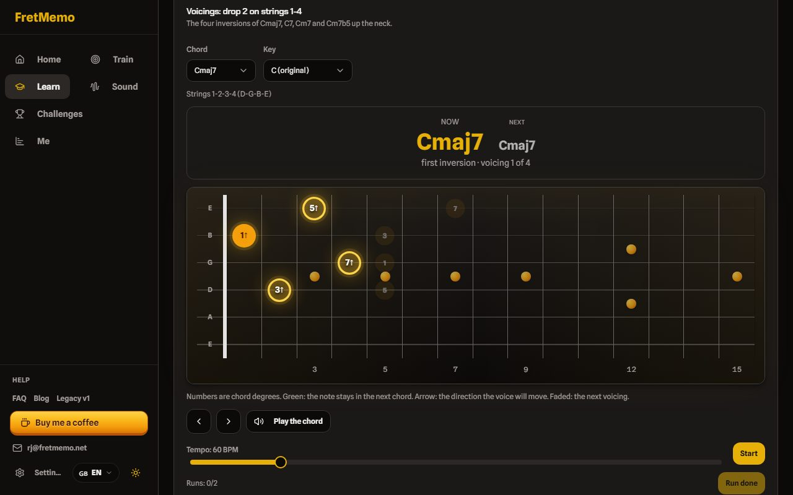

FretMemo's "Seventh chords and comping" path teaches the shell and drop 2 voicings guitar players use for jazz comping, in 12 free modules. You start with the five seventh-chord qualities, play shells with the root on string 6 and string 5, learn drop 2 on two string sets and drop 3 on two more, and finish by comping ii-V-I progressions and three standards over a swing or bossa backing. It runs in the browser with no account.
This is the path I wanted when I first tried to play jazz and found that the chord book shapes either needed six strings and a third hand, or sounded like a folk song.

Why seventh chords need their own voicings
A seventh chord in close position stacks four notes within one octave: Cmaj7 is C-E-G-B. On a piano that's one hand. On a guitar, notes a third apart on neighbouring strings mean awkward stretches, so close position is hard to grab. Guitarists spread the notes out instead, and the two standard ways of doing that have names: drop 2 and drop 3. The other trick is to leave notes out, which gives you shells.
What drop 2 and drop 3 mean
Drop 2 takes a close-position chord and moves its second note from the top down an octave. Start with Cmaj7 as G-B-C-E from low to high. The second note from the top is C. Drop it an octave and you get C-G-B-E, which sits on the A, D, G and B strings at frets 3, 5, 4 and 5. Four notes on four adjacent strings, and every finger has a string.
Drop 3 moves the third note from the top down an octave instead. Start with B-C-E-G. The third note from the top is C, so you get C-B-E-G: the root on string 6 at fret 8, then the D, G and B strings at frets 9, 9 and 8, with the A string muted. That gap between the bass and the rest is why drop 3 lives on 6-4-3-2 and 5-3-2-1. It sounds wider and has a clear bass note.
A seventh chord has four notes, so each voicing type has four inversions, named by the note in the bass. A drop 2 Cmaj7 with E in the bass is first inversion, with G in the bass second inversion.
Shell voicings and guide tones
A shell is the root, the third and the seventh, with no fifth. With the root on string 6 there are two layouts: root-7-3 on strings 6, 4 and 3, and root-3-7 on strings 6, 5 and 4. The same two work with the root on string 5. Changing quality is one finger: from maj7 to 7 the seventh drops a fret, and from 7 to m7 the third drops a fret. Without a fifth, the m7 and m7b5 shells come out as the same three notes, and the bass player or the melody tells them apart.
The third and seventh are the guide tones, and in a ii-V-I they barely move. In Dm7-G7-Cmaj7, the third of Dm7 (F) stays and becomes the seventh of G7, while the seventh of Dm7 (C) falls a half step to B, the third of G7. Then F falls to E and B rises to C, the third and the root of Cmaj7, or B simply stays as its seventh. Module 10 has you comp a jazz blues with only those two notes on the D and G strings, which is the lightest comping there is and a very good map for soloing.
The 12 modules
- Construction (1-2). "Seventh chord qualities" and "Seventh chords in a key" (Cmaj7, Dm7, Em7, Fmaj7, G7, Am7 and Bm7b5 in C major).
- Shell voicings (3-5). Shells with the root on string 6, then string 5, then "ii-V-I with shells", where the bass string changes so your hand can stay in one place.
- Drop 2 (6-8). Drop 2 on strings 1-4, "Drop 2 on strings 2-5" and a ii-V-I with drop 2.
- Comping (9-12). "Drop 3", "Guide tones", "Comping rhythms" and "Comping standards".
Comping rhythms and standards
Comping is rhythm first, and the path treats it that way. "Comping rhythms" has a jazz blues in F with shells played four short strokes to the bar, Freddie Green style, and Blue Bossa with drop 2 voicings over a bossa nova backing. The theory card also covers the Charleston: a stroke on beat one and on the "and" of beat two.
"Comping standards" puts it all together over Autumn Leaves, Rhythm changes and All the Things You Are, in drop 2 voicings with a swing feel. The board shows the voicing nearest to the previous one, and you play its top voice on beat one of each chord. The microphone checks that top note. In the ii-V-I loops with drop 2 you do the same, then play the rest of the voicing.
How to start comping with drop 2
- Open fretmemo.net/improv/sevenths, or click "Learn" and press "Start" on the "Seventh chords and comping" card.
- Do the quizzes in "Seventh chord qualities" and "Seventh chords in a key".
- In a voicing exercise, choose the "Chord" and press "Start". The metronome moves through the four inversions, one per bar. Press "Run done" after each full pass.
- In a loop, press "Start", keep the swing "Style" or change it, and pick a "Key".
- Switch on "Verify with mic" where it appears, put on headphones and play the top voice first on beat one.
- Already know your shells? Turn on "Unlock all modules" on the path map and open Drop 2 directly.
If triads are new to you, the guitar triads post covers the path that comes before this one. The 12 bar blues guitar solo path ends with the same jazz blues in F from the soloist's side. And if you're new here, FretMemo is also a free guitar fretboard trainer, which helps more than you'd think when a voicing has to start on a G.
Limits
- Drop 2 is drilled on two string sets (1-4 and 2-5) and drop 3 on two (6-4-3-2 and 5-3-2-1). Other string sets are not in the path.
- The voicing exercises have no microphone check, and the loops check only the top voice on the first beat, not the whole chord.
- Dim7 is in the theory card but not in the voicing exercises.
- Shapes and fret numbers follow standard tuning.
FAQ
What is a drop 2 voicing on guitar?
A drop 2 voicing takes a seventh chord in close position and moves the second note from the top down an octave. Cmaj7 as G-B-C-E becomes C-G-B-E, which fits on four adjacent strings. Each seventh chord has four drop 2 inversions, named by the note in the bass.
What is the difference between drop 2 and drop 3 voicings?
Drop 2 lowers the second note from the top by an octave and lands on four adjacent strings. Drop 3 lowers the third note from the top, which leaves a string gap between the bass and the other three notes, so it sits on strings 6-4-3-2 or 5-3-2-1. Drop 3 sounds wider and has a more separate bass note.
What are shell voicings in jazz guitar?
Shell voicings are three-note seventh chords: the root, the third and the seventh, with no fifth. On guitar they are usually played with the root on string 6 or 5, either as root-3-7 or root-7-3. They are easy to move through a ii-V-I because the third and seventh change by a half step or stay put.
How do I practice jazz comping on guitar?
Start with shell voicings and a steady four-to-the-bar rhythm over a ii-V-I, then move to drop 2 voicings and real tunes. Keep each voicing close to the previous one so the top note forms a line. FretMemo's free Seventh chords path follows that order with swing and bossa backing loops.
Comp your first ii-V-I
Open the Seventh chords path and start with the five chord qualities, or jump to drop 2 on the top four strings.
Open the Seventh chords path Free, no account, runs in the browser.